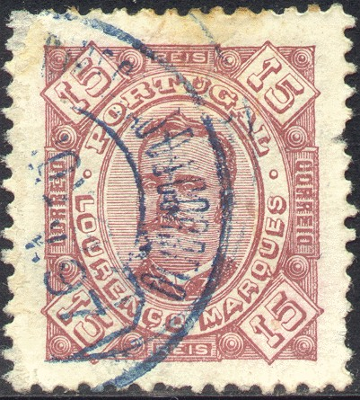
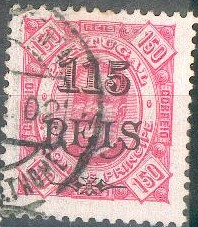
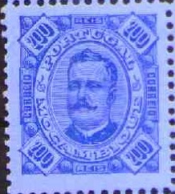
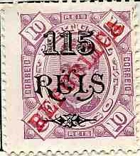
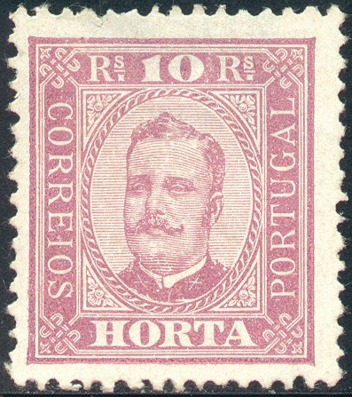
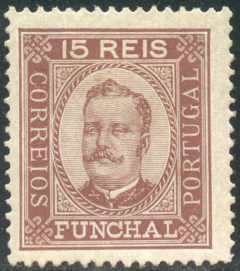
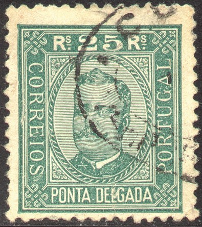

Return To Catalogue - Portugal
Note: on my website many of the
pictures can not be seen! They are of course present in the
catalogue;
contact me if you want to purchase the catalogue.
Many Portuguese colonies issued stamps in a similar design in 1894. The following colonies issued stamps in this design: Angola, Cape Verde, Inhambane (San Antonio overprint on stamps of Mozambique), Lorenzo Marques, Macao, Mozambique, Portuguese Congo, Portuguese Guinea, Portuguese India (different currency, values and colours), St Thomas and Prince, Timor - Zambezia. In order to save space, I have listed here all the different values for all colonies:


5 r yellow 10 r lilac 15 r brown 20 r lilac 25 r green 50 r blue 75 r red 80 r green 100 r brown on yellow 150 r red on red 200 r blue on blue 300 r blue on red

(Portuguese India issued stamps in a different currency and hence
different colours)
Some fancy surcharges '65 REIS', 115 REIS', '130 REIS' and '400 REIS' exist for most colonies:
Some stamps exist with additional 'REPUBLICA' overprint:

A few stamps exist with no less than 3 overprints:


The colonies Angra, Funchal, Horta and Ponta Delgada issued stamps in a similar design (outer border is more squarish), the same values and colours as mentioned above were issued:
  
No overprints or surcharges were issued for the above four coutries.


{kind=link}
{kind=link}
{kind=link}
{kind=link}